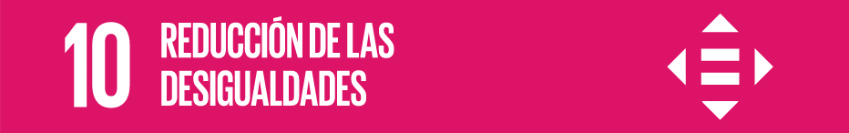
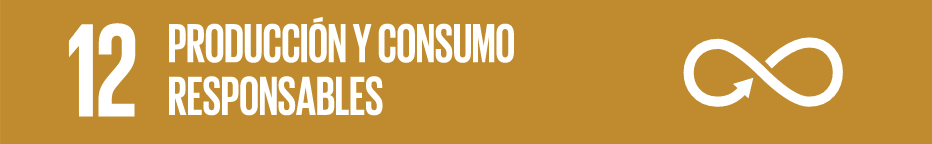

La educación permite la movilidad socioeconómica ascendente y es clave para salir de la pobreza. Durante la última década, se consiguieron grandes avances a la hora de ampliar el acceso a la educación y las tasas de matriculación en las escuelas en todos los niveles.
OpenBrailleBook sirve como herramienta que facilita la educación de las personas invidentes, y es que pese a que existen herramientas de apoyo mediante voz, aprender Braille sigue siendo hoy en día la alfabetización de este segmento de la sociedad.
OpenBrailleBook sirve como herramienta que facilita la educación de las personas invidentes, y es que pese a que existen herramientas de apoyo mediante voz, aprender Braille sigue siendo hoy en día la alfabetización de este segmento de la sociedad.

Reducir las desigualdades y garantizar que nadie se queda atrás forma parte integral de la consecución de los Objetivos de Desarrollo Sostenible.
Con nuestro proyecto, de una forma directa tratamos de disminuir la desigualdad entre personas con visibilidad reducida y el resto de la sociedad, ofreciendo la opción de poder leer en Braille a aquellos que no pueden permitirse el coste de un dispositivo de línea Braille tradicional.
Con nuestro proyecto, de una forma directa tratamos de disminuir la desigualdad entre personas con visibilidad reducida y el resto de la sociedad, ofreciendo la opción de poder leer en Braille a aquellos que no pueden permitirse el coste de un dispositivo de línea Braille tradicional.

El consumo y la producción mundiales dependen del uso del medio ambiente natural y de los recursos de una manera que continúa teniendo efectos destructivos sobre el planeta.
El progreso económico y social conseguido durante el último siglo ha estado acompañado de una degradación medioambiental que está poniendo en peligro los mismos sistemas de los que depende nuestro desarrollo futuro, por ello OpenBrailleBook optamos por un desarrollo responsable, nuestros dispositivos están fabricados mediante plástico reutilizado.
El progreso económico y social conseguido durante el último siglo ha estado acompañado de una degradación medioambiental que está poniendo en peligro los mismos sistemas de los que depende nuestro desarrollo futuro, por ello OpenBrailleBook optamos por un desarrollo responsable, nuestros dispositivos están fabricados mediante plástico reutilizado.